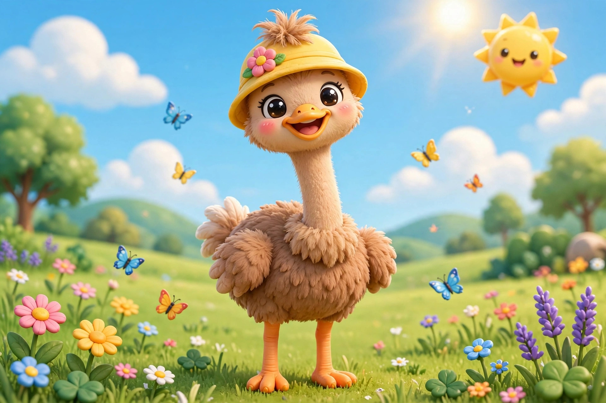
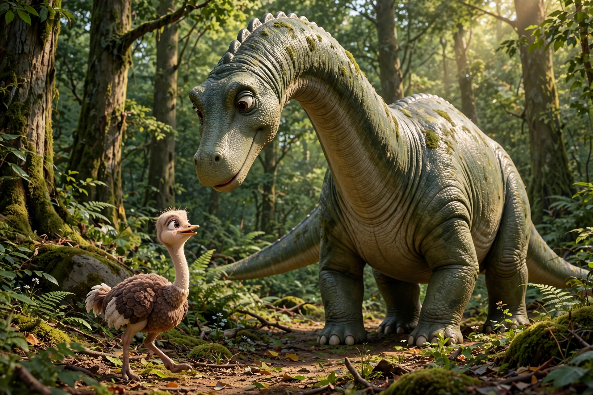

En un pequeño desierto, donde el sol brillaba fuerte y la arena era dorada, vivía una avestruz gigante llamada Giganta. Era tan, pero tan grande, que su cabeza casi tocaba las nubes y sus plumas se movían como banderas al viento. A un lado del desierto había un bosque frondoso y verde, lleno de árboles altos y cantos de pájaros. Giganta siempre miraba ese bosque con curiosidad, pero nunca se atrevía a entrar. Todos los días, Giganta iba a la escuela con las demás avestruces. Pero en lugar de ser bienvenida, sus compañeros se burlaban de ella. —¡Miren a Giganta, es enorme! —decían riéndose. —¡No cabe en el salón! —gritaban otros. —¡Es la más grande de todas, qué rara! —se burlaban. Giganta agachaba la cabeza y no decía nada. Sus plumas se le caían de tristeza y sus ojos se llenaban de lágrimas. Un día, ya no pudo aguantar más. Llorando, salió corriendo del desierto y se adentró en el bosque, lejos de todas las burlas. Entre los árboles, Giganta encontró un lugar tranquilo y se sentó a llorar. De pronto, escuchó un ruido enorme: ¡TUM! ¡TUM! ¡TUM! —¿Quién llora por aquí? —dijo una voz grave y amable. —Soy Giganta —dijo ella, secándose las lágrimas—. Y tú, ¿quién eres? —Soy Dino —respondió el dinosaurio—. Vivo aquí solo, desde hace muchísimo tiempo. Nadie viene a verme. Giganta y Dino se miraron y, sin decir nada más, entendieron que ambos estaban solos. Desde ese día se hicieron grandes amigos. Jugaban entre los árboles, corrían por el bosque y se contaban sus tristezas y alegrías. Giganta ya no se sentía tan sola. Pero un día, algo terrible pasó. Un grupo de zopilotes malvados llegó volando al desierto y comenzó a destruir la escuela de las avestruces. Tiraban los techos, rompían las ventanas y asustaban a todos. —¡Ayúdennos! —gritaban las avestruces aterrorizadas. —¡Dino! ¡Dino! —gritó Giganta con todas sus fuerzas. Y desde el bosque, con un rugido que hizo temblar la tierra, apareció Dino. El dinosaurio gigante se plantó frente a la escuela y rugió tan fuerte que los zopilotes malvados salieron volando despavoridos, sin mirar atrás. —¡Váyanse y no vuelvan jamás! —rugió Dino. Los zopilotes desaparecieron en el horizonte y nunca más regresaron. Todas las avestruces se acercaron, sorprendidas y agradecidas. —¡Gracias, Giganta! ¡Gracias, Dino! —decían todas a la vez. Desde ese día, todo cambió. Dino ya no era solitario: se hizo amigo de todas las avestruces y jugaba con ellas en el desierto y en el bosque. Y Giganta, la avestruz enorme, ya no era molestada. Al contrario, todos la admiraban por su valentía y por tener un amigo tan increíble. Giganta sonrió, rodeada de amigos, y entendió que ser diferente no era algo malo. Era, en realidad, lo que la hacía especial. Y así, la avestruz enorme y el dinosaurio del bosque vivieron felices, rodeados de amigos, para siempre. Fin. 💕

Cuento de Abril
Volver al inicio